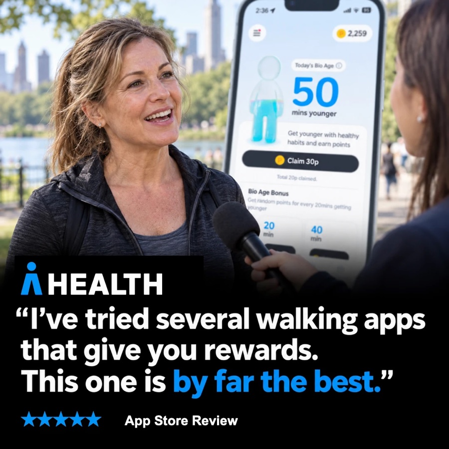
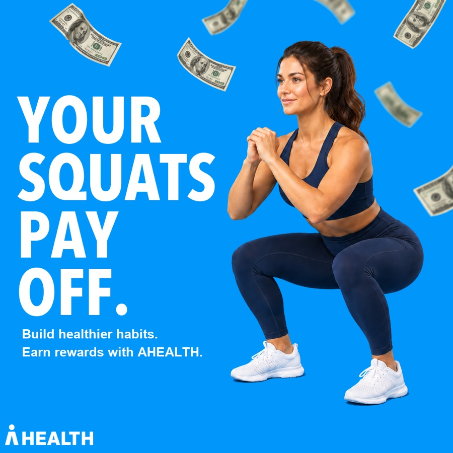
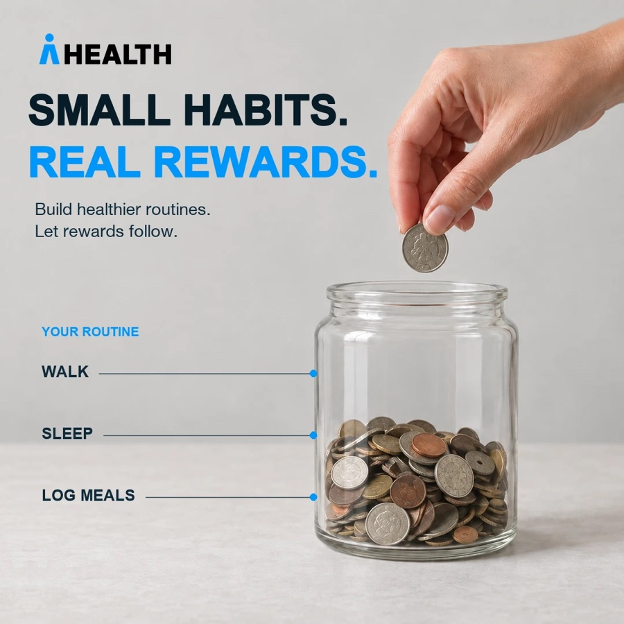

How It's Made — 제작 방식과 도구
이미지AI 로 배경과 키 비주얼을 만들어 Figma 템플릿에 얹습니다. 한 컨셉을 최대 7사이즈로 펼치는 것도 AI 로 자동화하고 있습니다. 만들기 전에 후킹 채점 기준 8개로 검수합니다Figma · AI 이미지 생성 · 사이즈 자동화
영상배우 촬영 에셋을 CapCut 으로 편집합니다. 컷 나누기와 자막 싱크, 무음 삭제를 Claude 로 자동화해 러프컷까지 한 번에 뽑고, 그 위에 AI 나레이션과 AI 인물·영상 생성을 얹습니다CapCut · Claude 편집 자동화 · ElevenLabs · AI 영상 생성
리브랜딩머니워크 → 에이헬스 전환에 맞춰 CTA 를 "맞춤형 건강관리하고 현금받기"로 고정하고 기존 소재를 새 브랜딩으로 교체CTA 통일 · 소재 교체
분석소재 단위 데이터를 주간으로 뽑아 신규 소재 첫 성적표와 기존 소재 순위를 정리합니다. 지표는 설치와 IPM 을 봅니다. CPI 는 태운 금액에 따라 흔들려서 소재끼리 나란히 비교하기 어렵습니다AppsFlyer · 주간 리포트 · 설치 · IPM
Live — 집행된 소재
소리 켜기
08.21 · 첫 영상 소재 · Meta · TikTok
40대 엄마의 하루 — 건강검진 POV 브이로그
입사 후 처음 만든 영상 소재입니다. 인물과 장면을 모두 AI 로 만들었습니다. 아픈 데가 늘어나는 40대 엄마의 하루를 따라가며 영양제 · 양치 스쿼트 · 물 마시기 세 가지 습관을 보여주고, 그 기록을 앱이 대신 해준다고 닫습니다.
70%
설치→가입 전환
8~9월 소재 묶음 4개 중 1위
8~9월 소재 묶음 4개 중 1위
27
설치 · 3편 합산
소액 테스트
소액 테스트
POV 브이로그AI 인물·영상 생성포맷 테스트
08.22 → 08.28 · 건강 소구 배너 · Moloco
포맷은 그대로 두고 소구점만 바꾼 테스트
1차에서 소구점과 포맷을 넓게 펼쳐 8종을 집행해 설치 236건을 냈습니다. 2차는 1차에서 가장 반응이 좋았던 포맷 하나로 고정하고, 그 안에 담는 소구점만 바꿔 다시 8종을 만들었습니다. 어떤 소구점이 먹히는지 보는 것이 목적이었습니다.
복약과 다이어트 소구가 반응이 좋아 이후 영상 소재로 활용했습니다.
포맷 고정소구점 변주복약 · 다이어트 선정
In Progress — 앱 설치 숏폼 7편 · 업로드 대기
9월에 만든 상시 앱 설치용 30초 숏폼입니다. 배너 테스트에서 반응이 좋았던 다이어트와 복약 소구를 영상으로 옮겼고, 나머지는 리워드 · 건강검진 · 걷고 벌기 소구로 넓혔습니다. POV · 질문 · 쇼크 · 숫자 네 가지 훅 유형으로 첫 3초를 다르게 잡았습니다. 앞의 네 편은 실사 촬영, 뒤의 세 편은 AI 인물로 만들었습니다. 일곱 편 모두 아직 집행 전이라 성과 수치가 없습니다. 마우스를 올리면 재생되고 클릭하면 소리가 켜집니다.
소리 켜기
소리 켜기
소리 켜기
소리 켜기
소리 켜기
소리 켜기
소리 켜기
Global — 영미권 시장 소재 4종
같은 앱을 영미권 시장에 맞춰 다시 푼 소재입니다. 실제 앱스토어 리뷰를 그대로 인용하는 방식과, 한 장에서 메시지가 한 번에 읽히는 방식 두 가지로 만들었습니다. 이미지는 네 장 모두 AI 로만 제작했습니다. 집행까지 가지 않아 성과 수치는 없습니다.


